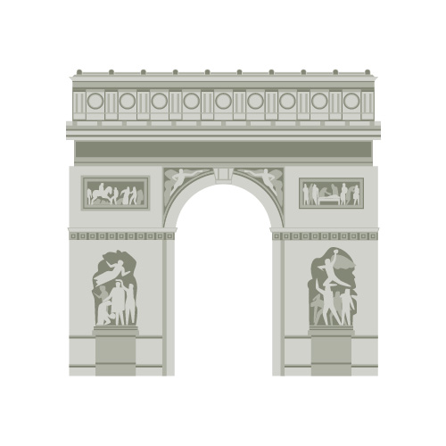

Meet the Team
Felipe Bassi
Team LeaderI am a Penn State Behrend junior majoring in Digital Media, Arts and Technology. I am also minoring in Data Visualization and MIS.

Tonya Velcko
Team MemberI am a 5th semester student pursuing a major in DIGIT and a minor in Game Development.
Egan Peck
Team Member4th year student at Behrend and this is my first semester as a DIGIT major.
Stephen Catledge
Team Member2nd year student at Penn State Behrend pursuing a DIGIT major and Game Development minor.
Behind the Curtains
Those who might want to take a deeper look at our work, a look into our code and scripts! Luckily for these curious folk, it is all public and it can be found on our GitHub: Letters from Europe